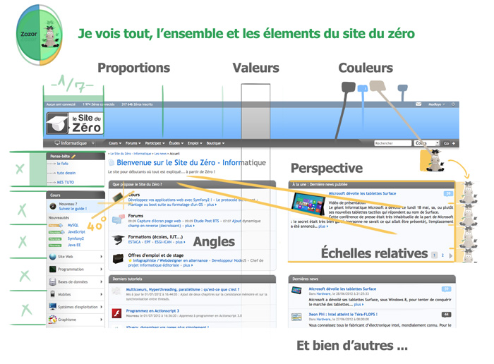
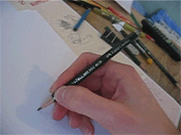
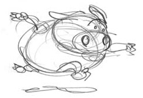

Un jour, alors que j'étais retranché du monde à méditer sur le pourquoi du comment du dessin, j'eus la surprise de recevoir la visite d'un âne peu banal. Zozor qui était venu me faire une demande des plus particulière : " Apprends-moi à dessiner ".
D'abord sceptique à l'idée de prendre un élève, sa petite bouille et son regard plein de curiosité finirent par me convaincre. Zozor avait toujours rêvé d'apprendre le dessin sans jamais oser se lancer. Cette fois-ci il était bien décidé à passer le pas ! Néanmoins lui apprendre le dessin se révélait un sacré défi... oui car il est peut être bon de vous rappeler que Zozor n'a pas de doigts ! Ah vous pouvez trouver toutes les excuses du monde pour ne pas vous lancer (pas de talent, j'ai deux mains gauches, etc.) vous pourrez jamais faire autant que Zozor qui a pourtant su dépasser son handicap.
Pour l'aider au mieux j'ai même demandé le renfort de 3 profs qui interviendront au cours des leçons : le trio légendaire des primary colors ! :soleil:
Ils m'ont été d'une aide très précieuse pour écrire les cours. Comme il y a un Zozor en chacun de nous, on s'est dit qu'il est tout naturel de partager ces leçons avec vous. Si même sans doigts Zozor y arrive, alors vous aussi et comme lui vous deviendrez un artiste accompli !
Je vous propose d'apprendre le dessin avec des conseils simples sans tomber dans le simpliste. Je ne vous apprendrai pas ma manière de faire, "mon style". Je vous propose plutôt de partir à la découverte des principes fondamentaux qui se cachent derrière tout dessin, des bases simples qui vous permettront de composer vos propres œuvres.
Si vous êtes prêt à réellement apprendre le dessin, suivez mes lignes. :)
"Oui mais moi je ne sais pas dessiner." "Oui mais je n’ai pas ton talent." Des phrases tellement anodines alors qu'elles sont pourtant si loin des réalités. Imaginez comment dans une autre discipline on percevrait de telles phrases : "oui mais moi de toute façon je ne sais pas construire un moteur à compression variable, je n'ai pas ce talent-là." Mmmh ? Et bien oui il faut peut-être commencer par apprendre avant d'en être capable. :D Alors pourquoi le dessin devrait faire exception à la règle ? À en croire certains le dessin serait quoi, une sorte de don magique incapable d'être enseigné ? Il y a une telle méconnaissance des réalités du dessin qu'on fini par en avoir une vision complètement abracadabrante.
Pourtant tout le monde peut apprendre à dessiner. Les résultats ne viennent pas d’un coup (comme pour tout), mais c’est simple on ne peut que s’améliorer et parfois même être surpris de nos progrès. Apprendre à dessiner est surtout une question d’envie et de plaisir !
Aaah apprendre le dessin, quel vaste programme. Quand on regarde des dessins de débutant, les questions posées dans les forums ou même les leçons censées nous apprendre à dessiner, on se rend compte du fossé qu'il existe pour maîtriser cet art. Trop souvent seule la surface est évoquée et l'on passe à coté des points les plus importants pour composer une image. On va nous parler de comment dessiner un portait ou dessiner en perspective, les classiques techniques d'ombres et de lumières, dessiner un paysage ou des animaux, avec des pas à pas qui ne font que nous montrer de "jolis" dessins sans nous apprendre réellement à en faire. Encore une fois prenons l'exemple d'une autre discipline, vous vous imaginez lire un pas à pas sur comment réaliser une transplantation du cœur ? Avec de bien belles images de toutes les étapes de l'opération, et hop vous voilà chirurgien ! :p
Cette méconnaissance autour du dessin ne facilite en rien nos débuts et ne nous encourage pas à persévérer. Comment apprendre efficacement le dessin ? Trop de questions sont laissées sans réponses satisfaisantes si bien que ce flou artistique si l'on peut dire ^^ nous laisse bien désemparé en tant que débutant.
C'est en se renseignant sur les cours de dessin que reçoivent les artistes à Disney, Pixar ou autres entreprises prestigieuses que l'on réalise le fossé de connaissances qui peut exister entre ce qu'on pense du dessin et ce qu'il est réellement. Lorsque j'avais commencé le dessin, peu de ressources étaient disponibles sur le net. Heureusement désormais les choses ont quelque peu changé, de nombreux storyboarder, animateurs ou illustrateurs partagent leurs connaissances sur leurs blogs. Rendant ainsi possible à chacun qui s'en donne la peine (et qui comprend l'anglais) de se rendre compte à quel point l'enseignement du dessin est riche.
Les différentes parties de ce big-tuto ont pour but de répondre aux questions essentielles que vous vous posez, ainsi qu'à vous apporter la base nécessaire pour débuter en dessin. Mais pas seulement !
À force de se renseigner et de s'acharner sur le dessin pour en comprendre son fonctionnement, on se rend compte qu'il existe des fondamentaux indispensables qui vous permettent de réaliser vos propres œuvres, que le résultat ne soit plus l'œuvre du hasard mais d'une réelle compréhension et d'une maîtrise de votre art. Vous verrez qu'il n’y a pas de règles en dessin, seulement des principes. Des principes à utiliser consciemment suivant ce que vous souhaitez obtenir. On aura l'occasion de revenir sur les principes fondamentaux de nombreuses fois au fil des pages.
Il faut également garder en tête que quelle que soit la discipline, ce sont toujours les mêmes yeux. Les mêmes fondamentaux s'appliquent donc à tous les domaines de l'image, que ce soit pour le design d'un site web, un logo, des dessins de bandes dessinées, du character design, ou même pour l'architecture d'intérieur, le cinéma, la photo, l'animation, etc. Vous allez découvrir progressivement les principes fondamentaux du dessin. Prenez votre temps pour tout assimiler et nous verrons que les principes de base se retrouvent de manière bien plus subtile et complexe, mais toujours simplement !
La particularité du dessin
Il est à noter que contrairement à de nombreux tutoriels sur, par exemple des compétences informatiques, les résultats ne sont pas aussi immédiats avec le dessin. Il ne s'agit pas d'appliquer à la lettre les étapes d'un tuto mais d'un véritable travail sur soi, pour améliorer son sens de l'observation et bien d'autres talents. C'est une discipline qui demande beaucoup d'investissement personnel, d'écoute et d'énergie. Et oui, apprendre à dessiner demande beaucoup de patience et d'efforts !
Les mots ont leur importance. Faire des efforts implique trop souvent une connotation négative : effort = forcer, transpirer et amène la possibilité de finir par craquer, céder, et abandonner. Là où la pratique focalise simplement sur le fait de faire et de dessiner, tout simplement. Remplacer effort par pratique, voilà de quoi démarrer en douceur le dessin. :)
Pour maîtriser le dessin il vous faudra infiniment plus de pratique que de suivre à la lettre les étapes d'un tuto mais l'avantage est là. Le dessin vous permettra une créativité qui se retrouvera ensuite dans la manière dont vous vous servez des logiciels d'images ou même de programmation (après tout, les compétences sont toutes liées, et même la programmation est bien plus créative qu'on ne peut le penser). Le dessin vous apporte aussi des avantages dans tout autre domaine de la vie comme nous allons le voir ci-dessous.
Quand on voit l'énergie nécessaire pour apprendre à dessiner on peut se demander pourquoi fournir autant de pratique ? Qu'est-ce que le dessin peut bien vous apporter qui vaille autant le coup ? Chacun dessine pour des raisons différentes qui peuvent varier au cours de sa vie, j'aimerais néanmoins rappeler une chose toute simple : vous avez bien appris à lire et à écrire, pourquoi pas le dessin alors ? Ooh vous ne souhaitez pas être un "artiste" ? Dans ce cas-là je laisse le soin à Betty Edwards de vous répondre :
Citation : Betty Edwards « Dessiner grâce au cerveau droit »
Il est bon de se rappeler que nous n’enseignons pas la lecture et l’écriture uniquement pour produire des poètes et des écrivains, mais bien plutôt pour cultiver la pensée.
Bien plus ancienne que l'écriture, l'image est tout autant un outil privilégié d’expression et de communication. Dès la Grèce antique l'art était reconnu comme ayant un rôle thérapeutique et cathartique (faire tomber les barrières), c'est bien pour ça qu'apprendre le dessin n'est pas toujours facile, du moins pour débuter.
Au delà du simple fait d'arriver à faire de beaux dessins et/ou de bons dessins, apprendre à dessiner développe beaucoup de vos qualités et ceci dès le début de votre apprentissage. Voilà de quoi rester motivé pour progresser. En voici une liste non exhaustive et tout à fait subjective puisque tirée de mon propre ressenti :
En général
Se faire plaisir et améliorer son bien-être.
Notre art étant à l'image de ce que nous sommes, c'est un chemin favorisé pour partir à la découverte de soi.
Pour le corps
Améliorer ses capacités psychomotrices et spatiales, notamment avec la coordination oeil-cerveau-main mais aussi dans la compréhension de l'espace, des lignes, formes et proportions.
Être zen... rien de tel que le dessin pour apprendre à ralentir.
Améliorer sa santé.
Pour le mental
Dépasser ses limites, sentir ses progrès et ainsi gagner confiance en soi. Vous prouver que vous êtes capable de. C'est simple si vous arrivez à apprendre le dessin je pense que vous pouvez tout apprendre. ^^
Réduire le fossé qui existe entre ce que vous voyez et ce que vous arrivez à faire. Vous vous sentez ainsi plus à même de prendre en main les choses.
Se prouver que c'est possible. Au delà des préjugés, au delà des blocages, réussir à dessiner vous prouve que tout peut changer avec le temps et la pratique.
Pour apprendre à voir
Être plus à l'écoute de votre environnement et de votre entourage.
S'émerveiller des petites choses qui échappaient à votre regard.
Mieux comprendre ce que vous voyez, apprendre à voir entre les lignes.
La capacité de vous focaliser pleinement sur un sujet (pour la même raison que efforts-pratique, je préfère le terme se "focaliser" que se "concentrer").
Pour développer sa créativité, concrétiser et communiquer
Améliorer votre imagination et votre créativité.
Être capable de trouver des solutions inhabituelles à des problèmes habituels.
La capacité à visualiser, anticiper, puis donner vie à vos pensées. En clair : concrétiser !
Communiquer vos idées et vos sentiments de manière plus efficace parfois qu'avec le dialogue même. D'expérience perso j'avais été très étonné de voir à quel point les gens pouvaient être plus réceptifs aux messages dits par l'intermédiaire d'une œuvre qu'à un même message dit par la personne elle-même. Une œuvre de par son caractère "détachée" de l'auteur déclenche moins de réactions de blocages ou de rejets chez la personne qui reçoit. C'est comme si c'était quelqu'un d'autre qui nous faisait part de ses sentiments et idées alors que pourtant c'est bel et bien l'auteur qui est derrière l'œuvre.
Etc.
D'avoir listé toutes les qualités apportées par le dessin ça en devient presque "too much". Il faut dire que le dessin est une discipline globale si l'on peut dire, pas étonnant qu'elle influence indirectement autant de talents différents. Des talents qui peuvent d'ailleurs être développés avec bon nombre d'autres disciplines, que ce soit de monter des projets, apprendre à danser, gérer des équipes, apprendre à chanter, à bricoler, à programmer, cuisiner. Voilà de quoi améliorer tout autant de qualités humaines.
Tout peut être intéressant et vous permettre d’obtenir une plus grande palette d’expression !
En apprenant à dessiner vous ne regarderez plus les choses de la même manière, votre sensibilité et votre sens de l'observation se développeront, c'est toute votre personnalité qui en est métamorphosée. Les résultats se feront ensuite sentir dans n'importe quel domaine, ce n'est pas pour rien que les grands généraux apprenaient les Arts. ;) Apprendre à dessiner est un sacré avantage, d'autant plus dans notre société actuelle où nous sommes sans cesse sollicités à outrance par de nombreuses images. À se demander pourquoi nous ne recevons pas d'éducation à l'image. On a pourtant bien des cours d'écriture, pourquoi pas d'image ? Savoir lire une image serait d'autant utile, de comprendre simplement en quoi elles nous parlent et en quoi elles nous influencent au quotidien. Le dessin apprend à voir les choses telles qu'elles sont, c'est plutôt une belle qualité en soi.
De plus en plus de personnes souhaitent se mettre au dessin assisté par ordinateur ; toutefois ce nouvel outil, aussi intéressant soit-il, ne peut pas remplacer le travail de l'artiste. Même si l'apprentissage du dessin est possible directement sur tablette graphique, des bases en dessin traditionnel représentent un plus non négligeable, voire même indispensable. L'apprentissage du dessin traditionnel permet de ne pas tomber dans les pièges du numérique et vous apporte également une sensibilité pour appréhender le numérique avec bien plus de richesses que des dégradés automatisés et autres effets pré-mâchés, tous "jolis" mais sans âme.
Quels sont les pièges du numérique ?
Ne pas faire assez de recherches avant de commencer son dessin
En traditionnel, ce n'est pas aussi souple que le numérique pour apporter des modifications à son dessin. Par rapport au numérique cela peut être vu comme un défaut alors que cela entraîne aussi une qualité : celle d'anticiper les problèmes auxquels on va être confronté au cours de la réalisation de son œuvre et ainsi, les résoudre dans des recherches préliminaires.
Prenons un artiste au hasard, notre ami Michel Ange. Pensez-vous qu'il ait commencé à peindre la chapelle Sixtine sans aucunes recherches préalables ? Bien au contraire, il a réalisé de nombreuses recherches parfois aussi détaillées qu'un dessin final. Tout cela afin de mieux saisir ce qu'il avait à mettre dans l'œuvre finale, et pourtant Michel Ange est loin d'être un débutant. :D
Un autre exemple ? Milt Kahl, dessinateur légendaire des "Nine Old Men" des studios Disney. Alors qu'il travaille sur Robin des bois, l'un des derniers films auquel il contribuera au cours de sa carrière, alors qu'il a donc une sacrée expérience et un sacré coup de crayon, malgré cela je me rappelle avoir été émerveillé de voir tous les croquis de recherches préliminaires qu'il avait fait pour trouver LA bonne pose à ses personnages. Celle qui servira au mieux les besoins de l'histoire, celle qui représentera au mieux l'état émotionnel du personnage.
Si les Maîtres de dessin font autant de recherches préliminaires avant de commencer leurs travaux, peut-être bien qu'on tient là quelque chose d'important, non ? :-°
S'illusionner sur son niveau
À notre époque il est devenu bien plus facile de reproduire la surface, l'apparence de grandes œuvres. Les jolies couleurs et effets des logiciels nous facilitent le travail et nous donnent l'impression de faire de belles choses alors que le dessin est complètement bancal et sans vie. Malheureusement quand on débute notre œil n'a pas encore été suffisamment aiguisé, on se laisse bluffer par l'apparence et on oublie qu'on a tout à apprendre. La moindre des choses qu'on puisse faire c'est d'avoir la modestie de se dire qu'il y a forcément un tas de choses qui échappe encore à notre oeil et d'aller à leur recherche.
La facilité de pouvoir revenir en arrière
Revenir sans arrêt en arrière ne favorise pas à obtenir une maîtrise de son trait, ni à donner suffisamment d'attention à sa méthodologie de travail, ni à être suffisamment concentré, ni à faire suffisamment de recherches préliminaires (oui j'insiste ^^ ) pour savoir où l'on va.
La facilité de zoomer sur son œuvre
Zoomer à volonté éloigne de la compo générale et nous attarde sur l'ajout de myriades de détails au détriment de l'harmonie générale de l'image. Déjà qu'on tombe facilement dans ce piège en tradi, en numérique c'est d'autant plus fréquent.
Etc.
Vous voilà prévenu ! Je complèterai la liste petit à petit, n'hésitez pas à me signaler dans les commentaires si vous voyez d'autres points qui mériteraient d'être ajoutés. Ne pensez pas que je dénigre le dessin numérique, il nous fait gagner un temps précieux et permet d'appréhender le dessin différemment de ce que permet le traditionnel. C'est un sacré plus, mais pas pour débuter !
J'ai une dernière remarque à partager avec vous. Une pensée à laquelle on ne pense pas forcément de nos jours tant nous ne sommes plus à l'écoute de nous même et de notre corps. Tant qu'à faire, au lieu de vous ruer sur les tablettes graphiques, profitez autant que vous pouvez de cette période à éveiller vos yeux au monde au lieu de les faire mourir en face d'un écran d'ordinateur, vous aurez bien tout le temps pour cela après. :lol:
Testez la sensibilité de divers médium sur tout autant de supports différents, l'odeur de l'encre sur votre toile, la beauté des couleurs qui s'entremêlent lorsque vous nettoyez votre palette sous l'eau. Un peu de plaisir et de sensibilité au lieu du cliquetis monocorde des touches de clavier, faites vous plaisir ! :)
Un grand nombre de personnes n'envisagent même pas d'apprendre le dessin car elles croient ne pas en avoir le talent. Au lieu d'abandonner avant même d'essayer et si vous aviez la curiosité de passer le pas ? Juste pour voir... Après tout vous n'avez rien à y perdre, tout à y gagner, et vous risquez même d'être agréablement surpris. En fait c'est justement cette croyance autour du talent qui bloque l'apprentissage du dessin et non le fait d'en avoir ou non. Laissez-moi clarifier la notion de talent au cours de ces lignes.
Dans la vie, on manque souvent d'une vision plus large, surtout en dessous de 25 ans où l'on manque du recul des années pour se rendre compte à quel point tout change avec le temps. J'ai une histoire à propos de talent. Lorsque j'étais plus jeune j'étais émerveillé de voir la facilité de certains à représenter un personnage en entier, debout et en action. On aurait pu dire qu'ils avaient du talent alors que moi mes personnages étaient difformes et écartelés sur le papier, et pourtant, là où ils ont ensuite stagné, j'ai persévéré et je suis devenu bien plus habile avec les années.
Si je peux donner un exemple concret et pour caricaturer un petit peu le réflexe de se bloquer au talent tu l'as / tu l'as pas. Voilà ce que je dessinais avant :
Souvent des personnes qui ont un meilleur niveau de base se reposent sur leurs acquis et en grandissant deviennent "normales" comparées à des personnes dites sans talent qui pourtant ont continué à persévérer depuis. C'est même ces dernières que l'on qualifie désormais de talentueuses. Comme quoi le talent fait davantage référence à un point de vue extérieur sur le niveau d'une personne qu'à une réalité intérieure et immuable. C'est là qu'on touche à quelque chose de bien plus important que le talent même : le plaisir et le désir de dessiner. C'est l'envie de dessiner qui vous pousse à la pratique et donc à vos progrès et au final à ce foutu talent !
Le plaisir est un facteur primordial pour apprendre le dessin. Sans plaisir on peut difficilement fournir autant de travail, ou du travail forcé ce qui ne peut que vous dégoûter du dessin. Le désir amène au talent. Voilà ce que prouve l'expérience et la pratique mais figurez-vous que ce sens caché du talent ne l'est pas tant que ça. Les mots ont une histoire, autrefois ils étaient pleins de sens et avec les siècles ils ont souvent perdu de leur profondeur pour aller vers des significations toutes en surfaces. Lorsque j'écrivais sur le talent, c'était mon expérience et mon propre ressenti qui guidaient mes lignes. Par curiosité je me suis alors renseigné sur l'étymologie du mot talent, et quelle surprise !
Figurez-vous qu'à la base le mot talent veut dire "désir", "volonté" !
...
D'un sens tout en mouvement : du désir qui mène aux progrès, nous sommes passé d'un sens tout en surface : le talent inné tu l'as ou tu l'as pas. :D Le sens d'origine est lié à une réalité observable là où le 2e sens n'est qu'une interprétation intellectuelle limitée, comme un instantané figé de la vie. Tout est dit : Il est possible à chacun d'atteindre un bon niveau. Certes, certains auront plus de facilité et d'aisance ; certains auront un petit quelque chose en plus. Mais qu'importe ? Au lieu de se comparer aux autres, mieux vaut regarder à l'intérieur de soi et le trouver son petit plus ! Puis les choses ne sont pas aussi simplistes, vous remarquerez que certains auront plus de facilité à dessiner des personnages en action, d'autres à passer des émotions, à faire rire, pleurer, pour d'autres encore ce sera de créer des personnages attachants, des mascottes, ou à passer des idées importantes dans leurs œuvres. À chacun ses spécificités, suivant sa personnalité !
L'important est que vous aimiez ce que vous faites, le lecteur le sentira aussi et il aimera ce que vous faites. Après tout, au-delà de la technique et du niveau, n'est-ce pas cela le plus important ? Se faire plaisir ? Se faire plaisir en dessinant mais aussi en prenant conscience de ses progrès, le philosophe français Alain assimilait même la prise de conscience de ses propres progrès au bonheur. (Vous pouvez en lire davantage sur Alain et Faire son bonheur en suivant le lien)
Le dessin, si vous vous en donnez la peine la pratique :) est accessible à tout le monde.
L'observation amène à l'imagination, elle la nourrit d'un milliard de formes avec lesquelles jouer et inventer pour enrichir vos dessins. Sans observation vous n'aurez rien en tête si ce n'est des clichés. Ce sont ces clichés qui rendent vos dessins génériques, là où l'observation amène une richesse inépuisable pour rendre spécifique et donc intéressante la moindre de vos lignes.
Plus que de dessiner souvent, le dessin est une activité de chaque instant. Dès qu’un moment se présente profitez-en pour observer, de quoi égayer les longues minutes d'attentes dans les transports en communs ou lors des réunions et repas de famille lonnnngs si looonngs d'ennuie. :-° C'est tout simplement impossible de s'ennuyer avec le dessin puisqu'il y a toujours quelque chose à observer. Tout est prétexte à votre apprentissage, que ce soit dans le bus ou le métro profitez-en pour observer les gens sous toutes les coutures, comment cette personne passe le temps ? Regarde-t-elle sans arrêt sa montre ? Est-elle absorbée par la lecture d'un roman, a-t-elle l'air de s'ennuyer ou à la recherche d'un regard à partager ? Comment ses pensées se reflètent dans la position de son corps et sa gestuelle ? A-t-elle des tics ? Semble-t-elle plutôt une personne calme et réfléchie ou une vraie boule de nerf ? À quoi voyez-vous tout ça ? ...
Voilà toutes les questions à se poser pour orienter votre œil. C'est en y répondant que vous trouvez un tas de petits détails susceptibles d'améliorer vos dessins. De même pour les objets, la forme de cette bouteille ne fait-elle pas penser à un personnage ? Quelles sont les formes principales qui composent une chaise de bureau ? Comment la perspective d’une voiture varie quand on passe à coté en bus ?
Non seulement, vous obtenez une bibliothèque mentale de formes à laquelle faire appel pour dessiner sans modèle, mais en plus votre capacité à déceler les différences de proportions, d'angles, ou à agencer correctement les couleurs, et bien d’autres talents s’en trouvent améliorés. Lorsque j'étais étudiant un ami m'avait conseillé une astuce bien utile : s'imaginer en train de dessiner ce qu’on observe. On visualise ainsi comment passer de ce que l’on voit à un dessin, on réinterprète les formes mentalement sans même avoir besoin de feuilles et de crayons. Magique !
Rien que ça ! Quel rapport avec le dessin ? À vrai dire le titre est là pour vous titiller car j'aime bien ça. ;) Néanmoins il n'est pas tout à fait dénué de sens même si j'aurais pu intituler cette partie comment avoir une vision globale. Je ne l'ai pas fait car vous allez voir que cela va un peu plus loin que le simple fait de voir l'ensemble plutôt que les détails. Tout d'abord explorons cette notion d'avoir une vision globale et à quel point elle est très importante en dessin.
Lorsqu'on dessine, surtout en dessin d'observation il y a beaucoup de choses à voir et à représenter, si l'on fonctionne comme on a l'habitude de le faire en s'attardant sur chaque détail, c'est l'échec assuré. Il nous faut apprendre à avoir une vision globale des choses afin d'arriver à les représenter correctement.
Passer d'une vision globale à une vision par détail a été mis en valeur par la théorie du cerveau gauche - cerveau droit. Là où l'hémisphère droit de notre cerveau contrôle la partie gauche de notre corps, l'hémisphère gauche contrôle quant à lui la partie droite de notre corps. L'hémisphère gauche serait principalement le siège de la pensée analytique et du langage. L'hémisphère droit celui de la pensée globale, des émotions et du spatial. Je vous laisse deviner quel mode a été mis en valeur dans nos systèmes actuels d'éducation. :p
Cette théorie souvent cuisinée un peu partout à la sauce horoscope pourra toujours être critiquée puisque le cerveau ne se révèle pas aussi compartimenté et simpliste que cela. Je laisse aux spécialistes du cerveau le soin d'affiner ces connaissances, néanmoins la théorie cerveau gauche - cerveau droit est bien pratique pour imager un réel ressenti dans notre manière d'appréhender les choses. Avec la pratique on le sent bien en dessinant qu'on ne fonctionne pas de la même manière que si l'on discute avec un ami, ce ne sont tout simplement pas les même parties physiologiques qui sont sollicitées pour telle ou telle occupation. La pratique et l'attention portée à ce que vous ressentez en dessinant vous amène à maîtriser consciemment ces différents modes de fonctionnement.
Voici d'autres exemples pour vous aider à mieux identifier ces deux manières de voir. Imaginez une forêt, notre côté global verra la forêt là ou notre côté linéaire verra l'arbre. Chacun a son utilité. Un aurte exmelpe fascinnat ets de vior à qeul poitn l'oeil en lisnat oubile chqaue dtéail, chqaue letrte puor aivor une vision globale et être capable de lire les mots dans leur ensemble. Si bien qu'il est possible de lire même en mélangeant l'odrre de chqaue letrte. Le mot sera toujours lu.
La vision globale et par détails marche aussi avec le design d'un site web, après tout c'est une image également faite pour être vue.
C'est votre hémisphère droit, votre vue globale qui fait que vous identifiez du premier coup d’œil que vous êtes sur le Site du Zéro. Tout comme vous reconnaissez le visage d'un ami parmi une foule. Puis l'hémisphère gauche prend le relais pour lire les détails comme les news affichées ou encore les éléments de la page, le logo en haut à gauche, le menu à gauche, le contenu du site, et le Zozor en haut à droite. Dans ce détail même on peut apercevoir les éléments qui le composent, l'herbe qu'il mâchouille, ses cheveux etc. Puis revenir en entier sur Zozor, retour ainsi à la vue globale.
On peut même aller plus loin dans notre manière d'observer une image. Voir l'ensemble du SDZ puis simultanément les éléments qui le composent, leur place les uns par rapport aux autres, leur taille relative, les couleurs différentes etc.

Voici pour le coté détail/global, passons maintenant à l'étape suivante. :)
Pendant votre pratique du dessin peut-être avez-vous déjà ressenti cet état où tout vous vient naturellement ? D'emblée vous savez où poser vos traits et tout roule comme sur des roulettes, sans accroches ni considérations inopportunes. Puis sans même vous en rendre compte vous voilà à hésiter, à perdre le fil de votre dessin, à faire des erreurs et patatra, le dessin est foiré.
Vous arriviez à dessiner sans souci car vous aviez une vision d'ensemble de tous les éléments de votre dessin, intuitivement, qui vous guidait comme un plan de chantier guide des ouvriers. Un état bien fragile qui disparaît aussi vite qu'il est venu. C'est lorsqu'on se perd dans les détails et parties de l'image qu'on sort de ce mode de fonctionnement. Heureusement il existe une solution, la pratique tout d'abord mais aussi une petite astuce. Lorsque vous ne savez plus par quel bout prendre votre dessin ou que vous n'arrivez pas à mettre le doigt sur ce qui ne va pas : décomposez les vues ! Au lieu d'essayer de tout voir d'un coup sans y arriver, focalisez votre regard sur un critère seulement comme :
les angles et directions de l'image ;
les espaces négatifs de l'image ;
les grandes masses de l'image ;
la structure 3D des objets ;
l'horizon et lignes de fuite ;
reconnaître un avant plan, un plan médian, puis l'arrière plan de votre image ;
les couleurs ;
les zones de lumières et d'ombres ;
la matière et la texture des objets ;
etc.
Parfois il est trop dur d'appréhender une image à la fois dans sa globalité et dans les éléments qui la constituent. C'est un état qui ne vient pas toujours naturellement et qui peut se révéler fatiguant à la longue. C'est là que nous avons besoin d'une pause ! Observez juste les couleurs c'est plus simple que de tout voir. Puis observez seulement la lumière et ainsi de suite jusqu'à appréhender pleinement votre image. Passez de l'un à l'autre des regards, prenez le temps de vous en imprégner pleinement, puis réunissez toutes ces vues en une seule. C'est ça cette sensation d'éveil qui nous fait ressentir qu'on comprend dans son ensemble ce qu'on a sous les yeux. Vous comprenez maintenant le titre de cette partie, à mon sens l'éveil n'est qu'un stade de l'observation, rien de mystique ou d'inatteignable en soi. Désormais vous savez quoi faire lorsque vous ne sentez plus le truc. Au lieu de vous énerver ou de vous culpabiliser, relaxez-vous, décomposez les vues puis réunissez-les. :)
Apprendre le dessin va plus loin que de simplement voir globalement ou par détails, avec la pratique nous apprenons à voir l'ensemble et l'exemple en même temps. La forêt et l'arbre en même temps. L'arbre et sa place dans la forêt, l'arbre et sa taille comparée à celle de la forêt, etc. C'est la même chose pour chaque élément de vos dessins : un angle plus prononcé ici, une droite ici, une courbe concave ici, convexe pour cet objet, 2 fois plus grand ici que là, ou encore la ligne du nez de ce perso va se prolonger jusqu'à tel élément du décors, la ligne de cet élément est plus bas que cet autre objet, etc.
Aaah vous croyez bien voir ? Je vais vous montrer à quel point ce n'est pas le cas. ;)
Une des phases dans l'apprentissage du dessin est d'apprendre à voir les choses telles qu'elles sont, et cela passe par une synchronisation oeil-cerveau-main, si l'on peut dire. On ne se rend pas compte combien on voit mal et à quel point il nous est possible d'améliorer notre sens de l'observation, il nous faut tenter de saisir la réalité sur papier pour se rendre compte de nos lacunes. Quelle surprise de voir toutes les différences entre notre dessin et ce qu'on a sous les yeux. Pourtant on voit bien que tel objet est devant l'autre, que celui-ci est plus gros ou qu'un autre ou n'arrive qu'à la moitié de la hauteur de celui-ci. Et pourtant, on n'y arrive pas correctement ne serait-ce que pour dessiner une simple table ! Notre ego en prend un coup, nous qui pensions bien saisir ce qui nous entourait, on se rend compte que nous avons bien à apprendre.
Vous verrez par la pratique du dessin d'observation que votre œil s'améliore petit à petit, vous permettant ainsi de différencier d'infimes nuances dans les proportions ou les angles d'un objet, des différences qui échappaient à votre regard autrefois. Afin de vous aider dans cette pratique j'ai quelques conseils qui peuvent vous aider.
Dessinez des formes et non des objets
Un des conseils est d'oublier que nous sommes en train d'observer/dessiner un objet en particulier. Oubliez le mot, oubliez l'objet et focalisez vous seulement sur les formes. C'est justement parce qu'on croit connaître ces objets qu'on se trompe facilement jusqu'à parfois représenter des détails qui n'étaient même pas présents en face de nous ! Simplement parce que dans notre tête c'est comme ça que cet objet est censé être.
Avec la pratique vous allez voir que dessiner les objets qui vous entourent est une vraie redécouverte de votre environnement. Vous ne survolez plus les choses, vous observez. Vous n'interprétez plus seulement les choses avec votre intellect, vous dépassez le voile de vos interprétations et de vos préjugés pour voir, simplement voir votre environnement tel qu'il est. Un angle ici, tout en douceur là, oh tiens c'est rigolo cette forme-ci... Vous (re)découvrez de petits détails dont vous niiez l'existence, découvrant de la beauté dans des choses auparavant banales. S'émerveiller au quotidien de ces petites découvertes, voilà de quoi contribuer à votre sourire. :)
Notre cerveau, ce foutu flemmard
Un des points qui fait que nous n'arrivons pas à retranscrire correctement ce que nous voyons est notre cerveau, ce sacré flemmard. :D
Notre cerveau aime le calme, que tout soit droit, symétrique et de proportions similaires. C'est bien moins fatiguant pour lui que de la différence à tout va, si bien qu'il a tendance à mal interpréter ce qu'il voit afin d'aller à l'économie d'énergie, il uniformise tout ! Il affadit les contrastes, homogénéise les couleurs, n'est pas assez sensible pour voir de subtiles différences dans les proportions et bien d'autres choses. Nous le verrons dans la partie sur les fondamentaux, en dessin souvent il faut faire l'inverse et ainsi ne pas centrer, ne pas tout mettre horizontal et vertical mais oser la diagonale, oser les différences. Le dessin d'observation va alors nous permettre de rééduquer notre cerveau afin d'être capable de l'utiliser au mieux pour dessiner. Le dessin d'observation et sa contre-partie inévitable : prendre des mesures !
L'importance des mesures
Lorsque j'étais étudiant, en prenant des mesures sur mes dessins ou en observant les dessins d'autres élèves, je me suis rendu compte que le cerveau atténuait souvent les raccourcis de la perspective. Comme sur l'image ci-dessous où il va avoir tendance à représenter la table d'un point de vue plus haut que là où nous sommes en réalité. Comme s'il était plus simple pour lui d'aplatir la table au lieu de la voir en perspective. Quel flemmard !
Surveillez aussi vos angles dans vos dessins. D'un 60° le cerveau passe à un 80 °. D'une diagonale franche il ne reste plus qu'une timide intention qui se rapproche de la perpendiculaire. Ou de la même manière d'un 30° on passe à un 15° rapprochant notre droite de l'horizontale. Voilà pourquoi il est bon de tracer les lignes de perspectives quand on débute. Autant prendre toute l'aide possible pour démarrer correctement vos dessins. Pour vérifier vos dessins vous avez à votre disposition un outil précieux :
Le crayon comme unité de mesure
L'outil indispensable et le plus à porté de main pour prendre des mesures est tout simplement votre crayon ! ;) Au lieu de vous embêter à sortir une règle, prenez une partie de votre crayon qui vous servira d'unité de mesure relative. Relative car vous n'aurez pas de centimètres pour vous guider, on va faire encore plus simple et simplement comparer les objets les uns au autres. Pour ce faire prenez soin de bien tendre votre bras, le crayon étant plus ou moins petit s'il est proche ou non de nous, autant bien tendre le bras afin de garder toujours le même rapport de taille. Puis déterminez une zone entre le bout du crayon et votre pouce, ce sera votre unité !
Voilà quelques pistes pour vous en servir :
Observez combien d’unités vaut telle ou telle partie du corps et faites de même sur votre dessin. Si à la Xe unité on arrive au nombril, il faudra le vérifier et faire de même sur votre dessin.
Combien d'unité fait un objet par rapport à un autre. "Tiens cet immeuble fait deux fois la hauteur de cette poubelle au premier plan."
Étudiez les grandes lignes de votre dessin. Cela vous permet d'observer la hauteur relative des articulations par rapport au reste du corps. Par exemple dans une pose accroupie, peut-être que les genoux sont sur la même ligne horizontale que les épaules, etc.
Étudiez les angles de votre dessin, le crayon permettant d'avoir un repère horizontal ou vertical pour observer plus précisément les diagonales présentes dans une image. Cela permet d'évaluer plus facilement l'angle.
Voici quelques astuces et jeux pour varier votre pratique du dessin d'observation. Si vous en avez d'autres n'hésitez pas à les partager dans les commentaires.
Recopier un dessin à l'envers
En recopiant un dessin positionné à l'envers, cela permet de tromper son cerveau, au lieu de voir un sujet connu il va plutôt se focaliser sur les variations de la ligne et les espaces entre les formes, angles et différences de proportions, tout ce qui fait un dessin. Essayez, vous serez surpris de voir à quel point le résultat est bien meilleur que si vous aviez recopié un dessin à l'endroit. Cet exercice vous permet de ressentir cette manière particulière d'observer une image et de vous aider ensuite à retrouver cette sensation lorsque vous revenez à des dessins à l'endroit.
S'entrainer à visualiser
Regardez un objet, puis fermez les yeux pour visualiser l'objet le plus précisément possible. Si vous n'arrivez pas à le voir précisément c'est que vous n'avez pas donné assez de soin à votre observation préliminaire. Les prochaines fois vous serez naturellement plus attentif et à force de mieux visualiser vous retiendrez les formes et détails pour les réutiliser dans vos dessins. Un répertoire visuel à votre disposition !
Dessiner de mémoire
Suite logique de l'exercice précédent, dessiner de mémoire permet de confirmer un pas plus loin votre observation et surtout votre mémorisation.
L'exercice dit de Rorschach
Vous savez ce fameux test d'évaluation psychologique ? Et bien on peut s'en servir pour imaginer un tas de choses différentes. C'est le même principe avec des murs qui ont du crépi (peinture présentant du relief), ou en dessinant une multitude de points sur une feuille, en regardant les nuages ou les reliefs présents sur un tronc d'arbre. Cela vous aide à sentir ce qui peut sortir de l'aléatoire et l'orienter à votre sauce. En clair, à travailler votre imagination.
De l'abstrait au figuratif
Sur une grande feuille, dessinez au fusain des formes au hasard. Ensuite avec l'aide d'une gomme mie de pain, éclaircissez et estompez des zones de l'image jusqu'à faire apparaître un dessin plus figuratif. De l'abstrait vous avez ainsi une base à votre imagination qui vous permet, si vous êtes attentif aux formes, à révéler un dessin auquel vous n'auriez jamais pensé de prime abord.
Modelage improvisé
Même exo avec de la pate à modeler. Vous pouvez presser dans votre main la pate puis l'observer et révéler les lignes qui vous inspirent... et hop un visage !
Petites vignettes de composition
Pour apprendre à cerner rapidement la composition d'une scène, le rôle de la lumière, etc. Voici deux exemples dessinés au début de mes études :
Quickdraw
Essayez de dessiner rapidement une personne qui ne pose pas, et donc qui bouge, pour saisir son attitude générale en quelques traits. Cet exercice aiguise votre sens de la synthèse et la rapidité de votre observation puisqu'il exige de se concentrer sur les formes essentielles du sujet, en oubliant les détails superflus. On peut aussi dessiner ce qui passe à la télé, c'est encore plus dur mais un précieux exercice. À réserver quand on est déjà bien échauffé et avec l'habitude des croquis rapides. Ne vous bloquez pas aux premiers résultats il faut un peu de temps avant d'y arriver, c'est un des exercices les plus périlleux et un de ceux qui donnent le plus de souplesse à votre trait. Un défi que j'aimais bien relever !
Comme nous avons pu le voir chez le dessinateur le regard est d'une importance capitale. Quand vous regardez un objet, observez-le longuement et tentez de l'analyser : sa forme, taille, proportions, lumière et ombres, etc. Il vous faut déchiffrer toutes les caractéristiques de l'objet. Petit à petit vous allez regarder différemment tout ce qui vous entoure, dans la rue vous chercherez à comprendre comment l'ombre des passants se dessine sur le trottoir, les différents types d'immeubles, de fenêtres ou la perspective même de la rue.
Alors bien sûr c'est une manière d'observer qui change de la vie de tous les jours. Une attention particulière à avoir au quotidien, comme une seconde nature à installer par la pratique, puis peu à peu elle deviendra inconsciente et vous cesserez d'y penser. Naturellement votre œil saura de lui-même faire attention à placer les éléments là où il le faut dans vos dessins. Il faut néanmoins passer par cette étape d'attention particulière avant d'arriver à ce stade plus inconscient.
Après s'être penché sur l'importance de travailler vos yeux et votre sens de l'observation, passons à vos jolies mains. Peut-être que cela vous perturbe ce manque de maîtrise dans votre main et cette incapacité à représenter LE trait que vous aviez en tête ? Ou encore comment diable réussir à obtenir un trait vivant, comme on entend souvent ? C'est justement les points que nous allons voir ensemble mais tout d'abord une petite précision :
Trop souvent on ne prend en compte que la partie illustration finie du dessin, ce n'est pourtant pas le plus primordiale lorsqu'on débute et que l'on souhaite progresser. Les illustrations finies sont pour votre public comme la face visible de l'iceberg, tout le reste, les innombrables croquis et recherches sont justement ce qui fera la richesse de votre art. C'est avant tout cette partie "invisible" sur laquelle vous devez focaliser votre pratique. Autrement dit, si vous vous jetez tout de suite sur de grandes illustrations avec des décors compliqués et un tas de personnages, vous allez vous perdre dans les détails et au final perdre un temps précieux que vous auriez pu consacrer ailleurs. Prenez le temps pour apprendre l'essentiel comme l'anatomie, la perspective, la composition, l'invisible, le sens du volume, la lumière, toutes ces choses qui vous permettront ensuite de vous lancer dans des illustrations finies. De toute manière vous n'avez pas le choix ! ^^ Si vous ne le faites pas maintenant c'est plus tard, lorsque que vous serez empêtré dans vos habitudes, que vous aurez tout à désapprendre pour tout reconstruire correctement. Bien des souffrances et de temps perdu pour rien. On pourrait au final dire que passer beaucoup de temps sur un dessin alors qu'on débute revient à consacrer beaucoup de temps sur les mêmes erreurs au lieu d'aller vite en faire d'autres sur d'autres dessins. C'est qu'il vous faut connaître toutes les erreurs possibles avant de réussir à faire les bons dessins ! ;)
Alors bien sûr il est parfois important de passer plus de temps sur un dessin car on y apprend des choses complémentaires à la pratique du croquis, mais trop souvent les débutants passent des heures et des heures sur des croquis et n'osent jamais pratiquer des dessins de 5 min, 2 min voire même 30 secondes ! Si si, je vous assure que c'est possible. C'est peut-être déroutant au début mais primordial pour apprendre, au final cela en devient même plus appréciable que des dessins longs, plus de liberté, plus de gestuelle dans le trait. Tout simplement détendant et vivifiant !
Dans votre pratique des croquis il est important que vous ne vous souciez plus (seulement) du résultat, un dessin joli ou moche, un dessin raté ou réussi, l'intérêt n'est pas ici. C'est plutôt le processus qui compte. Les difficultés et blocages que vous avez rencontrés, la manière dont vous avez su les passer, ou toute cette recherche pour justement trouver comment y arriver. Sans oublier le ressenti que vous aviez lors de votre observation et lors de sa retranscription sur la feuille. Il faut remplir des feuilles entières de mains, visages, ombres, paysages, objets. tout ce qui vous tombe sous les yeux ou dans votre tête. Vous verrez qu'en seulement quelques feuilles, vous aurez progressé déjà dans la maîtrise de l'objet travaillé, mais aussi de manière plus générale dans l'affûtement de votre œil et l'aisance de votre main.
Voyez cela comme une pratique personnelle, presque intime. Après tout le moindre de vos croquis est le reflet de ce que vous voyiez à un instant donné. C'est pour vous que vous faites tous ces croquis, c'est votre intimité, le regard de l'autre n'a pas à intervenir ici. Pour une fois, vous pouvez vous lâcher, oser et vous faire plaisir.
Pour le dessin sur ordinateur c'est le même principe. Il est conseillé de faire un maximum de "speeds", c'est-à-dire d'illustrations faites en un temps limité (moins d'une heure pour des compositions complexes en couleur, voire en moins de 15 minutes). La pratique des croquis rapide est une porte ouverte pour expérimenter et trouver par hasard de petites merveilles : oh un personnage intéressant ici, oh joli cet assemblage de couleurs, ah tiens c'est un peu "raté" ici mais il y a un petit quelque chose que je pourrais reprendre pour un autre dessin. Des trouvailles qui consciemment n'auraient pu s'exprimer. En clair : ne vous censurez pas !
Là où la pratique du dessin d'observation et l'entrainement de l'œil permettent de nourrir votre imagination, la pratique du croquis, elle, permet à votre imagination de s'exprimer pleinement. Un des exercices que je pratiquais à l'époque pour me détendre était de faire des séries de dessins de 1 minutes chacun, chronomètre à portée de main et je remplissais des feuilles et des feuilles de croquis en partant dans toutes les directions sans se soucier si c'était bien ou non, qu'importe ! Résultat : que de surprises et de personnages repris ensuite pour développer mes histoires ! Il y en avait même plus qu'il n'en fallait, c'est ça qui est magique avec le dessin de croquis, on a l'impression de ne pas faire d'efforts tant c'est rapide. On a même pas le temps de penser à ce qu'on va dessiner que des formes sortent d'elles même sur la feuille. Tout n'est pas aussi idyllique non plus, je me rappelle à quel point mes premiers essais étaient complètement catastrophiques, d'autant plus que dessiner rapidement n'était vraiment pas mon fort à l'époque. Et pourtant encore une fois, avec la pratique et après quelques feuilles, le trait se délie tout autant que l'imagination. (Je parle évidemment de feuilles, de papier. Pour dessiner.)
Lorsqu'on débute c'est une des questions qui revient le plus souvent tant le moindre de nos traits nous semble malhabile. Ou bien les commentaires que l'on reçoit sur nos dessins portent à chaque fois sur le fait que nos traits ne sont pas assez vivants. Mais, en même temps, comment je fais pour l'améliorer mon trait ? Juste pratiquer ? Oui, mais il y a quelques astuces pour vous aider :
Dessinez, n'écrivez pas

Au départ on tient le crayon comme on a l'habitude de tenir un stylo pour écrire. C'est à dire trop près de la mine et en faisant de tout petits gestes. J'avais remarqué cela après plusieurs années de pratique, des amis qui dessinaient également et moi-même tenions plus haut notre crayon, alors que des débutant restaient collés à la mine. Comme on peut le voir sur la vidéo à côté ça ne donne pas la même chose. Tenir le crayon plus haut est peut-être moins précis au départ, il donne tout de même une plus grande amplitude de mouvement et surtout un trait bien plus vivant. Après tout dépendra de vos besoins, tenir haut le crayon est idéal pour des croquis rapides et d'observation dessinés souvent sur de grands formats, alors que tenir plus près de la mine est idéal pour ajouter des petits détails.
Faites de grands gestes !
Aaah c'est qu'on a peur de la brusquer la feuille, elle pourrait nous couper en retour tant elle est susceptible la petite. Je vous présente les fameux traits hésitants du débutant :
Non seulement ça prend un temps fou à faire mais en plus les nombreuses dents de scie ne permettent pas au regard de couler tranquillement sur la ligne. Le regard est sans cesse arrêté par les dénivelés, rien de tel pour enterrer son dessin. Mieux vaut un trait approximatif mais vivant, qu'un trait exact mais hésitant. Enfin tout dépend de l'effet voulu, néanmoins dans un premier temps il faut apprendre à lâcher son trait.
De l'épaule et non du poignet
Comme toute pratique manuelle nous avons la mauvaise habitude de commencer nos mouvements par l'extrémité du corps, les mains, les pieds, la tête. De quoi ne pas avoir assez d'amplitude et de souplesse dans nos gestes. En danse, en art martial ou encore en animation on apprend à amener le mouvement par les hanches jusqu'aux extrémités du corps. En dessin c'est pareil, ne pensez plus au poignet et faites commencer votre mouvement des hanches ou au moins des épaules si vous êtes assis. Pensez aussi à votre coude. Un coude c'est comme une flèche qui indique une direction, c'est lui qui guide. De toute manière vous n'êtes pas là pour dessiner mais pour faire de l'escrime !
Levez la main de votre support et dessinez en grand
N'étant plus gênée par le contact avec la feuille, la main vole littéralement. Vous aurez peut-être au début un geste moins précis mais une plus grande amplitude. La précision viendra avec la pratique.
Dessiner sur un grand format a un avantage pour apprendre à dessiner : ça permet de prendre du recul sur son dessin, d'avoir un regard plus large sur ses lignes et de libérer son geste. Il y a simplement plus de place pour s'exprimer. C'est pourquoi il est bon de dessiner sur un format raisin 50x65cm lors des séances de modèle vivant.
Privilégiez les dessins rapides et la gestuelle aux détails

Surtout en dessin de modèle vivant ou autre dessin d'observation, pour éviter de dessiner dans un carcan, dessinez rapidement : 30 secondes, 1 minute, pas plus ! En si peu de temps vous êtes obligé d'aller à l'essentiel donc à la gestuelle. Dehors les détails qui alourdissent vos dessins. ^^
On le verra dans les fondamentaux, c'est le mouvement qui amène la vie dans un dessin. Si vous voulez un trait vivant, ne le surchargez pas de détails à outrance. Un surplus de détails gâche la beauté de la ligne. Privilégiez la ligne claire et spontanée. Imaginez-vous donner un coup d'escrime plutôt que de simplement dessiner sur votre feuille, ou encore comme un maître de la calligraphie faisant de grands gestes sur sa toile. Fluidité et maîtrise !
Passez vous de la gomme
Vous êtes ici pour apprendre à dessiner, n'ayez pas peur de gribouiller et de considérer votre dessin plutôt comme le résultat d'une recherche qu'un dessin en soi. Quitte au début à repasser en appuyant davantage sur un trait, si vous souhaitez le corriger ou l'affiner.
Dans les anciens commentaires quelqu'un posait la question de savoir si la gomme était à proscrire ou non, car des professeurs l'interdisaient là où beaucoup de professionnels ne voyaient pas pourquoi s'en passer. C'est vrai qu'on a trop tendance à nous dire qu'il ne faut pas utiliser de gomme sans expliquer complètement pourquoi, du coup à la moindre occasion on transgresse la règle et hop un p'tit coup de gomme !
Pourtant en expliquant et en comprenant ce principe de ne pas utiliser de gomme, c'est vous-même qui prenez l'habitude de vous en passer puisque vous en comprenez pleinement les bienfaits. Ce n'est plus contre vous, en vous forçant à ne pas l'utiliser. Subtile différence. :) Même si la question de la gomme peut paraître anecdotique je tiens à la développer ici car c'est une question d'intention, et l'intention est justement ce qui vient avant tout dessin.
Pourquoi donc se passer de la gomme ? Lorsqu'on débute on a souvent l'envie de faire d'aussi beaux dessins que nos artistes préférés. Cette envie là, bien que nécessaire pour motiver à dessiner amène aussi des intentions qui n'aident pas vraiment à apprendre le dessin. On cherche le beau, la surface, et la gomme nous paraît alors un outil indispensable pour arriver à ce but, camoufler nos maladresses de débutant et arriver malgré tout à faire un beau dessin. La gomme est très efficace pour cela, rien à redire là dessus, mais... voilà ce qu'il se passe : on passe à coté d'un point primordial en dessin, accepter ses "erreurs" et libérer son trait de ses maladresses.
Lorsque je débutais un dessinateur professionnel m'avait conseillé de ne dessiner qu'au stylo. Je ne comprenais pas bien pourquoi surtout que j'étais un grand utilisateur de la gomme. Je ne maîtrisais pas mon trait, comment faire directement au stylo alors ? J'allais jamais y arriver, ça allait être moche ! Hop opération chirurgicale d'ablation de mon cerveau... Et si je testais juste par curiosité ? Habitué à cette époque au recopiage je me mis alors à recopier directement au stylo quelques dessins que j'aimais bien pour la finesse de leur trait (le manga City Hunter, plus connu sous le nom de Nicky Larson ;) ). Premiers essais malhabiles puis quelque chose de nouveau arriva. N'ayant plus cette béquille de la gomme à laquelle je faisais sans arrêt appel, il a bien fallu que je m'y prenne autrement : le premier trait devait être le bon, plus le droit à l'erreur. Je me mis alors à davantage ressentir et à anticiper le trait que j'allais faire. À ne plus hésiter et au contraire guider le crayon en un geste déterminé et fluide, ainsi qu'à accepter de petites "déviances" dans le trait. Oui car chercher la perfection à chaque trait, cela me restreignait plus qu'autre chose. Alors qu'accepter de petites variations libère au final son trait et le rend bien plus vivant. Surtout que le lecteur ne voit pas la différence entre votre trait "parfait" en tête et celui qui est au final sur le papier. Pour lui le trait sur le papier, c'est le seul qui existe. C'est très bête mais on a tendance à l'oublier et à s'en faire pour rien.
C'est donc non seulement un trait plus vivant et fluide qui s'installa mais aussi une toute nouvelle rigueur dans ma méthodologie de travail. Je prenais davantage de temps à visualiser ce que j'allais faire, au lieu de me ruer maladroitement sur le papier. C'est au final toute ma manière de dessiner qui changea. Ne jamais utiliser de gomme n'est pas une fin en soit, ce n'est pas non plus une faiblesse que de l'utiliser pour corriger ses dessins. C'est par contre une bonne chose de s'imposer la limite de ne pas l'utiliser pendant un temps. Cela vous permet de progresser.
Pour conclure sur la gomme, cela me fait rire cette question qui divise entre le pour et le contre alors que les deux partis ont tout simplement raison. Le pour et le contre sont simplement deux intentions différentes qui ont chacune leur efficacité, à des moments différents. 'fin bref, maintenant vous savez. :) Se passer de la gomme est une bonne habitude à prendre pour débuter le dessin ou faire des croquis, rien ne vous empêche de l'utiliser pour des illustrations finies où il serait bien bête de tout recommencer pour un trait de travers.
Des astuces et jeux pour délier votre main et vous permettre de faire des dessins plus spontanés. Si vous en avez d'autres n'hésitez pas à les partager dans les commentaires.
Gribouille matinale
Vous pouvez prendre cela comme une habitude avant de commencer vos séances de dessins. Gribouillez pendant 10 minutes des lignes, courbes, droites parallèles, cercles, spirales etc. Vous pouvez même vous amuser à le faire de la main droite puis la gauche voire avec les deux mains en même temps. ^^
Cet exercice permet d'améliorer la fluidité et la maîtrise de votre trait. L'avantage comparé à des dessins plus complexes c'est qu'ici vous n'avez rien d'autre à penser que le geste même. Il n'y a qu'à tracer en toute liberté comme un enfant le ferait. Un exercice que je faisais chaque matin pour m'échauffer avant de débuter mes journées de dessin. Pour le plaisir et la beauté de tracer une simple ligne.
Répertoire de textures et de motifs
Suite plus recherchée de l'exercice gribouille, cette fois-ci vous allez orienter vos gribouillis dans une direction donnée, allez tiens des hachures côte à côte, ou plein de petits traits courbes, ou encore des spirales entremêlées. Le but est de trouver par hasard des motifs et textures qui vous plaisent et qui pourront être repris dans de futurs dessins comme ombres ou pour rajouter de la matière à vos dessins.
Le tableau noir
Avoir un grand tableau noir avec des craies blanches et de couleurs pour des études rapides à n'importe quel moment de la journée est un sacré avantage. Plus vous l'aurez de visible, plus cela vous motivera à dessiner. En repassant devant les dessins fait précédemment vous ne pourrez vous empêcher de les regarder, d'y voir des défauts à retoucher ou des endroits qui fonctionnent bien. L'avantage est de ne même plus avoir à se motiver pour aller dessiner, le tableau est déjà là en face de vous et les craies dans vos mains en train de dessiner.
Dessiner sans regarder sa feuille
Déstabilisant au départ, ne pas voir ce qu'on fait permet pourtant de libérer son trait. Marrant de constater que mes dessins faits avec cette méthode ressemblent à ceux fait avec un modèle en mouvement.
Dessiner un modèle en mouvement
Les dessins en exemple ont été dessinés avec un modèle qui au lieu de rester fixe pendant le temps de pose, effectuait un mouvement pour aller d'une position à une autre. Ces dessins ont également été fait en une seule ligne sans relever le crayon de la feuille, un autre bon exercice pour délier son trait. Dessiner sans relever le crayon vous permet de visualiser les liens qui existent entre les différents éléments d'un corps humain, ou d'un visage si vous faites un portrait, laissant la part belle à la gestuelle.
Dessiner de la main gauche ou même des 2 mains
Si vous êtes droitier, votre main gauche n'a pas les mêmes habitudes que la droite, elle est plus jeune si l'on peut dire. S'entraîner à utiliser la main gauche permet de réapprendre à tracer librement, sans les habitudes déjà installées dans la main droite. Vos tracés sont plus libres bien qu'assez bancals au début, il vous permettront néanmoins de ramener de la souplesse dans les dessins faits ensuite avec la main droite.
Quant à dessiner des deux mains simultanément, cela demande une sacrée synthèse de ce qu'on observe. Réussir à ne pas tracer les mêmes parties du corps suivant la main utilisée est un sacré défi mais un exercice stimulant. Il faut savoir vivre dangereusement pour progresser. ;)
Le meilleur moyen de progresser est la pratique du croquis d'observation. Aussi, je vous conseille de toujours avoir sur vous un petit carnet et un simple crayon à papier. Il est important de dessiner régulièrement ; tout peut être sujet de dessin : une rue, un paysage, un pot de fleur, un bureau, votre main, les passants. Tout !
Tout commence ici. Dessiner consiste souvent à reproduire les effets de la vision humaine sur une surface plane. Lorsqu'on apprend à dessiner, on a un peu tendance à l'oublier. ^^ On donne peu d'importance à la vision humaine et l'on part tout de suite sur les nombreuses ramifications du dessin, pour s'y perdre... Et si à la place on commençait par la base ?
Notre vision humaine possède des caractéristiques qui lui sont propres, nous avons deux yeux, sphériques et sensibles à la lumière. Connaître en quoi cela influence notre perception des choses permet de mieux comprendre le dessin. Figurez-vous qu'il découle de la vision humaine de nombreux principes très utiles, que ce soit la perspective même ou plusieurs outils pour vous permettre de contrôler la surface picturale.
Vous êtes-vous déjà demandé pourquoi les objets semblent plus petits à mesure qu'ils s'éloignent de vous ? Non, jamais ? Vous acceptez comme tel ce principe sans même le remettre en cause ou savoir d'où il vient ? C'est bien dommage car c'est justement un des principes très utiles en dessin. Nous allons voir cela de suite et dans les prochains chapitres. :)
Lorsqu'on se renseigne sur la vision humaine on apprend que le champ visuel de l'être humain est un cône dont la base démarre au niveau des yeux pour s'élargir au monde :
Si l'on place le même objet près ou loin de nos yeux, il ne va pas occuper la même place dans ce cône de vision. Près de nous il occupe une grande partie de notre champ de vue alors que plus loin, il n'en occupe plus qu'une petite partie.
L'objet n'a pas changé de taille entre temps, c'est la taille relative qu'il occupe dans notre champ de vision qui a changé. C'est de là que vient l'illusion de voir les objets devenir plus petits à mesure qu'ils s'éloignent de nous. Voici pour le pourquoi, intéressons-nous désormais au comment utiliser ce principe physiologique, à quoi cela peut bien nous servir en dessin ? Pour cela poussons un peu notre analyse de la vision humaine. Si un objet occupe une part de plus en plus petite dans notre cône de vision... mais alors au bout d'un moment il sera tellement petit qu'on ne le verra même plus ?
Ce que l'on voit de près, n'est plus visible dans la profondeur. C'est justement ça qu'on peut utiliser en dessin comme vous allez le voir.
Plus un objet est loin, moins il comporte de détails
Les objets que nous dessinons sont tous constitués de différentes parties, non ? Que ce soient les inscriptions d'un livre, la poignée d'un tiroir ou encore les vis qui maintiennent nos objets, des traces d'usures, de boue, des déchirures, etc. Tous ces petits détails sont plus petits que l'objet en lui-même, donc avant que l'objet ne disparaisse dans la profondeur, ces détails ne seront plus visibles.
La disparition des détails est un des outils dont vous pouvez vous servir pour donner de la profondeur à vos dessins. Le cerveau par habitude va interpréter un objet avec peu de détails comme étant loin de nous, tout simplement car dans la réalité c'est ainsi que notre vision fonctionne. C'est en reproduisant sur le papier les conséquences de ce principe visuel que cela est possible. Le cerveau est tellement habitué à ce que les choses fonctionnent ainsi qu'on ressent même une gêne si l'on dessine exprès l'inverse :
Plus un objet est petit, plus vite il cesse d'être visible
Les pétales d'une fleur disparaîtront dans la profondeur là où la montagne sera toujours visible. C'est également notre vision en cône qui amène les notions de point de fuite et d'horizon. Nous verrons cela dans le chapitre "comprendre la perspective". Pour l'instant continuons notre découverte de la vision humaine, avec le fait que nous avons deux yeux pour voir le monde. On appelle cela : la vision binoculaire !
Pour voir en quoi le fait d'avoir deux yeux influence notre vision des choses, je vous propose un petit jeu. Vous allez mettre votre main bien en face de vous, de manière à voir son tranchant. Puis comme sur l'image, gardez les deux yeux ouverts et approchez votre main de votre nez.
Et là... magique, vous voyez les deux faces de votre main !
Forcément, avec un seul œil, testez vous aussi pour voir. Cela ne marche plus car voici ce qu'il se passe :
Le cerveau se sert des deux "images" fournies par les yeux pour en recomposer une en volume. C'est ainsi que l'on peut voir plusieurs faces de notre main en la rapprochant suffisamment de nous. Mais pourquoi cela marche quand la main est proche et pas lorsqu'elle est éloignée ? Tout simplement parce que de près, votre main n'est pas vue sous le même angle par l'œil droit et l'œil gauche. Les deux "images" récoltées par le cerveau sont très différentes d'où cette distorsion de l'image qui nous paraît irréelle tant elle n'est pas habituelle. En général, ce que nous voyons n'est jamais aussi proche de nous, la déformation de la perspective n'est donc pas aussi apparente. En fait de loin c'est presque comme si les deux yeux voyaient la même chose.
Il existe tout de même un léger décalage entre les deux, que vous pouvez observer en mettant une main devant vous et en fermant l'œil gauche ou l'œil droit successivement. Mais grosso modo ce n'est pas aussi accentué que pour des objets vus de très près.
La vision binoculaire est source de 3 dimensions puisque le cerveau reçoit deux images différentes pour en composer une seule en relief. Elle permet alors une meilleure appréciation des distances et un champ de vision plus large. Là où avec un seul œil nous atteignons un champ visuel de 150 ° environ, le fait d'avoir deux yeux nous permet d'atteindre près de 180 °.
L'utilité de la vision binoculaire en dessin
Nous savons maintenant de quelle manière les objets sont perçus suivant qu'ils soient loin de nous et non déformés, ou au contraire très proches et déformés jusqu'à voir 3 faces d'un même objet. C'est probablement l'une des sources d'inspirations des cubistes qui sont venus autour des années 1910 jouer avec la représentation du réel, déstructurant leurs figures et les représentant sous de multiples angles de vues impossibles dans la réalité. (Voir Picasso et Georges Braques.)
Une table impossible à voir dans la réalité. Tout comme dans la peinture de Picasso, "Les 3 musiciens". D'autres exemples saisissants sont les peintures "Le grand dragon" ou "Le nombre de la bête est 666" de William Blake (1757-1827) qui bien avant le cubisme, donne un coté monstrueux et irréel à ses personnages par la représentation de plusieurs angles simultanés. Ses personnages semblant comme élargis, étirés en une perspective difforme.
Il n'y a plus qu'à reproduire ce mécanisme dans vos dessins. Avant de vous lancer sur le papier, posez-vous la question de savoir ce que vous souhaitez transmettre avec votre image. Voulez-vous que le lecteur se sente proche de votre sujet, comme s'il partageait le même espace que lui, vivait dans son environnement proche ? Quitte à déformer à outrance vos personnages et décors pour leur donner un coté monstrueux et irréel ? Ou au contraire préférez-vous éloigner le lecteur du sujet de votre dessin, dans une position plus calme de contemplation ?
Voilà le genre de question à se poser avant de débuter un dessin. La vision binoculaire d'un objet proche ou lointain n'est pas étrangère aux notions de grand-angle et longue focale de la photographie. Nous aurons l'occasion d'y revenir.
Avoir des yeux sphériques a également une influence sur notre vision. Pour s'en rendre compte rien de tel qu'une petite démonstration. Prenez un objet carré, une simple feuille pliée en carré fait l'affaire. Fermez un œil puis rapprochez au maximum l'objet de l’œil resté ouvert.
L'objet carré se transforme en un rectangle légèrement bombé. Vous pouvez vous amuser à le retourner à 90° pour vous rendre compte que la déformation se produit à nouveau. Ouvrez désormais l’œil qui était resté fermé ? Hop on retrouve à nouveau notre carré.
Voilà pourquoi la perspective qu'on emploie généralement se contente de diminuer les objets en profondeur (voir le cône de vision) mais occulte complètement la diminution et la déformation latérale due à l’œil sphérique. Tout simplement parce que le fait d'avoir deux yeux compense cette déformation. De plus, la déformation apparaissant à la limite de notre champ visuel elle est difficilement visible, en effet nous percevons mal les détails en périphérie, où tout est flou. On peut se demander pourquoi une telle déformation de l'image apparaît en bordure de notre champ visuel ? Peut-être que cela est dû au fait que les plans qui forment la sphère de notre œil, ne sont plus en face de l'objet observé lorsqu'ils se trouvent en périphérie.
Je ne sais pas si physiologiquement cette intuition est juste, néanmoins c'est une bonne aide pour retenir et comprendre ce principe qui lui existe bel et bien. Il existe des objectifs fisheye qui permettent de prendre des photos avec un angle de champ très large, et ainsi visualiser nettement cette déformation sphérique.
L'utilité de la vision sphérique en dessin
Nous avons vu qu'un objet sera déformé à mesure qu'il déborde de notre champ de vision. Un gros objet ou un objet suffisamment prêt de nous sera alors déformé, tandis qu'un petit objet ou un objet éloigné ne sera pas déformé. Voilà où l'observation de la réalité nous en apprend sur le dessin et vous fournit les outils pour contrôler l'espace de votre image. Dessiner des objets déformés à mesure qu'ils s'approchent des bords de l'image leur donne alors une grande impression de volume. Tout simplement parce que cela reproduit la déformation réelle qui apparait quand un large objet déborde de notre champ visuel. Vous pouvez en voir un exemple sur cette illustration de Scott Robertson (professeur de dessin au Art Center College of Design ainsi que pour les gnomon workshop). Je vous invite à aller voir son site web, un plaisir pour les yeux.
J'ai découvert ce principe en analysant le découpage du film Kuzco des studios Disney. Sur beaucoup de plans du film, au fur et à mesure qu'on s'éloigne du centre de l'image, les contrastes ont tendance à diminuer et les couleurs à prendre une teinte grise. Dans la même idée que l'exemple suivant, sans puis avec la zone grise, et pour finir en exagérant la zone pour mieux voir ce que ressent votre œil :
Je n'avais jamais entendu parler de cette astuce pendant mes études, mais j'ai un œil, et la curiosité à me renseigner. Me voilà donc sur Google à chercher des infos sur la vision humaine quand oh surprise, je tombe sur ce principe physiologique : l'œil distingue de moins en moins bien les couleurs lorsqu'on s'éloigne du centre de la vision. Voilà ce qu'il se passe :
Comme quoi tout est relié, après tout la peinture consiste à créer une illusion de réalité, pas étonnant qu'elle prenne base sur les principes de la vision humaine. L'utilisation d'une zone périphérique grise est alors un des moyens pour simuler cette réalité.
Le principe de la zone grise pourrait alors contribuer :
À rajouter de la dimension à l'image
En effet, si l'image devient grise sur les bords de cadre cela veut dire qu'elle s'éloigne de notre champ de vision frontal. Le contenu de l'image est tellement grand qu'il occupe tout notre champ de vision.
À se focaliser sur le centre d'intérêt
L'œil étant attiré par le contraste, la zone périphérique grise amène le regard vers le contenu de l'image.
À adoucir le cadre
On ne regarde pas seulement une image avec des bords tranchants et fixes. Nous sommes accueillis en douceur dans l'univers de l'image.
La liste n'est pas exhaustive, peut-être en voyez-vous d'autres ?
A venir, cette sous-partie sera la transition entre la vision humaine et la perspective. J'attends de boucler les chapitres sur la perspective afin de la rédiger. ;)
Voilà pour cette introduction aux principales caractéristiques de notre vision humaine. Vous avez désormais en main les bases nécessaires pour appréhender la suite. Que ce soit les couleurs, les contrastes, la perspective même, et un bon nombre de principes picturaux ; tous découlent de la vision humaine. Nous étudierons ces points dans les chapitres suivant de cette partie théorique, et n'oubliez pas, l'étymologie de la théorie n'est qu'observation ! ;)
Le matériel artistique ne fait pas la valeur d'un artiste, ce n'est pas non plus primordial pour apprendre à dessiner. La maîtrise des principes fondamentaux du dessin est bien plus importante et ces principes s'utilisent ensuite avec n'importe quel crayon, stylo, bouts de bois, sable ou n'importe quoi.
C'est souvent une erreur de débutant de tout de suite investir dans un tas de matériel souvent coûteux. L'achat de boîtes de pastels aux milliers de couleurs alors qu'il ne sait même pas en assembler correctement deux d'entre elles, du beau papier épais pour faire de l'aquarelle comme un pro ou autres carnets à croquis de qualité et tout plein d'accessoires. Comme si plus il en possédait plus cela prouvait sa motivation envers le dessin. Il y a pourtant déjà tant à apprendre ne serait-ce qu'avec un simple crayon. :-°
Il est tout de même primordial de tester un maximum d'outils, c'est une partie de votre apprentissage qui augmente votre sensibilité et les différents moyens de l'exprimer. Vous pouvez néanmoins le faire sans vous ruiner pour autant, question de mesure !
De quoi ai-je réellement besoin ?
Mmmh... de rien du moment que vous observez. :D Ensuite ? D'un crayon et d'une feuille pour y fixer vos pensées. C'est tout. Voilà le primordial.
Lorsqu'on se rend pour la première fois dans un magasin artistique on peut rapidement s'y perdre tant les choix proposés sont nombreux. Des myriades de crayons en tous genres, des carnets de croquis de différents grammages (90 g, 120 g, etc.)... Lequel est le bon ? Comment puis-je trouver ce qu'il me faut ???
Voici donc un petit descriptif de plusieurs de ces outils, ainsi que quelques conseils pour les utiliser au mieux. Chaque outil étant la découverte de sensibilités différentes, vous initiant ainsi à différentes manières de dessiner (par les masses, au trait, par couleurs, etc.).
Lorsqu'on débute, ce qu'on ne sait pas forcément au sujet des crayons à papier c'est qu'il existe des duretés de mine différentes, le plus utilisé étant le crayon HB. À chaque crayon son utilisation :
Les H (2H, 4H etc.) ont une mine dure. Ils sont faciles à gommer mais trop pâles à mon goût, ils ont tendance à laisser un sillon dans la feuille de par leur dureté. À utiliser pour des dessins techniques où la précision du trait est de rigueur comme en architecture.
Les B (2B, 4B etc.) ont une mine tendre. On peut ainsi obtenir plus de dégradés de tons en appuyant plus ou moins sur le crayon. Ils glissent plus facilement sur le papier, facilitant la gestuelle. Ils laissent parfois des traces après gommage. À utiliser pour des dessins artistiques, croquis rapides, illustrations, dessins de modèle vivant.
Utilisation
J'utilise des crayons 2B à 4B. Pour l'illustration, des 2B ce qui me permet une certaine précision tout en gérant un trait plus ou moins noir en variant la pression exercée sur la feuille. J'appuie peu pour faire les traits de construction (ou l'on peut prendre un crayon HB) et j'appuie davantage au fur et à mesure des étapes. Comme les crayons gras permettent d'obtenir plus de tons différents, je préfère tout faire avec. La preuve en image. Même avec un crayon gras comme le 4B il est possible d'avoir du gris clair.
(À vrai dire les crayons secs me font métaphoriquement le même effet que le bruit strident d'une craie sur un tableau. ^^ )
La tenue du crayon
Comme nous l'avons vu sur "Comment avoir un trait vivant ?", un artiste va souvent tenir son crayon plus haut que la moyenne car cela lui permet une plus grande amplitude de mouvement. Alors bien sûr, tenir plus haut son crayon n'est pas une règle absolue mais un principe, il est également utile de tenir le crayon plus près de la mine afin de gagner en précision et permettre un travail du détail. Tout dépend de ce dont vous avez besoin.
Faut-il une mine bien taillée ?
Pas forcément. Une mine ronde et homogène oui. Pour ne pas avoir de surprise en appliquant le crayon sur la feuille et avoir un tracé qui correspond bien à celui qu'on imaginait. Cela permet aussi d'obtenir plus de variations et de sensibilité dans notre tracé que si la mine était simplement pointue.
Comme débutant nous avons tendance à être obnubilé par la précision tout simplement car on ne maîtrise pas notre trait, et l'on va mettre ça sur le compte du crayon, le pauvre. :D Avant je faisais attention à avoir une mine pointue pour la précision, mais elle se casse facilement et il faut sans cesse la tailler à nouveau. Pour vous dire, à un moment j'avais même un tailleur miniature de mine !!! D'ailleurs à ce propos, dehors les tailles-crayons, j'ai une autre technique à vous présenter. Je l'ai apprise pendant mes études aux Beaux-Arts d'un étudiant chinois qui taillait ses crayons au cutter.
Vous pouvez ainsi dégager une large portion de la mine ce qui évite d'avoir à re-tailler votre crayon toutes les 5 secondes. Indispensable en dessin de modèle vivant où le fait de dessiner rapidement avec des crayons 4B fait disparaître la mine à vitesse grand V !
Voici l'astuce :
La main droite guide le geste tandis que la main gauche pousse avec le pouce ( :p ) la lame du cutter. C'est comme au basket ! Une main qui guide, l'autre qui envoie la balle.
L'avantage du cutter est aussi de tailler le crayon de différentes manières, on peut ainsi se servir de la forme de la mine pour avoir différents types de traits. Voici par exemple une technique développée avec Zozor, il s'agit de tailler la mine de son crayon en biseau, comme sa patte !
On peut avoir un trait épais pour faire les ombres (1), un trait fin pour le contour (2), et en tournant progressivement le crayon cela permet d'avoir un dégradé du tracé (3)
La forme en exemple vient en frottant un coté de la mine sur une feuille jusqu'à enlever une seule portion de la mine. Ou alors à l'aide du cutter. Au final même Zozor a pu dessiner sans avoir de doigts. :)
Pour résumer, crayons H pour les dessins techniques (architecture) 2B pour l'illustration, 4B pour les croquis d'observations et taillez au cutter vos crayons.
En France le format traditionnellement utilisé est le format A4 de 21x29.7 cm, c'est celui que vous avez pour le papier d'imprimante, feuilles de cours, etc. Pour le dessin il existe une multitude de formats différents, des plus petits au fameux format raisin en passant même par des formats carrés, tout dépend de vos envies. Le format raisin de 50x65 cm est très utilisé en dessin de modèle vivant et pour les natures mortes à la peinture. C'est en général la taille de vos cartons à dessins, vous savez les grosses pochettes bien encombrantes pour prendre les transports en commun. ;)
Le grammage du papier
Lorsqu'on souhaite choisir l'épaisseur de son papier on se retrouve face à la question du grammage du papier. Le grammage n'indique pas directement l'épaisseur du papier mais plutôt le poids de la feuille suivant une surface donnée, ce qui nous donne indirectement une idée de l'épaisseur. Le grammage s'exprime en gramme par mètre carré, pour vous donner une idée le papier journal est autour de 40g/m2 et le papier d'imprimante vers 80g généralement.
La question du grammage se pose pour certains médiums comme l'aquarelle où il vaut mieux avoir une certaine épaisseur pour éviter que le papier ne se mette à gondoler sous l'effet de l'eau. En général on nous conseille à partir de 300g/m2 mais personnellement du 120g me suffisait amplement et encore... je faisais même de l'aquarelle sur mes carnets à croquis de 90g/m2, c'est bien moins coûteux que du papier épais. Si la feuille pouvait gondoler une fois le dessin fini ce n'était pas si gênant. Il faut savoir aussi que cela dépend de votre manière de travailler l'aquarelle, si l'ensemble consiste en de gros jus à l'aquarelle et de multiples couches il vaut mieux au moins du 120g/m2. Pour ma part il s'agissait plutôt d'aquarelle utilisée en légers jus colorés pour agrémenter mes dessins, donc du 90g me suffisait même si le résultat était une feuille qui gondole parfois et des carnets de croquis de plus en plus épais. ^^
Le papier va plus ou moins gondoler suivant la quantité d'eau utilisée, il y a donc un juste dosage à trouver. À force de pratique et "d'erreurs" on ressent d'instinct la juste quantité, celle qui permettra à l'aquarelle de glisser sur le papier jusqu'à recouvrir la zone désirée, sans que de l'eau excédentaire n'ait la place de se faire absorber par le papier. Puis des fois on s'en fout que ça gondole un peu, on est là pour pratiquer avant tout.
Il y a aussi la possibilité de tendre son papier. Je ne l'ai jamais utilisée pour l'instant mais en gros cela consiste à imbiber son papier d'eau puis à le laisser sécher en tendant bien la feuille sur son support. Une fois sèche elle peut être utilisée pour peindre sans la voir gondoler par la suite.
La texture du papier
Le grain fin ou satiné est parfait pour des dessins précis, à éviter pour tout ce qui est tendre comme les pastels/fusains/craies qui ont besoin de grains pour s'accrocher à la feuille. Sur du papier satiné au moindre coup de vent ça glisse. Hop, y a plus de dessin ! ^^
Le gros grain donne du caractère à la feuille suivant qu'on recouvre plus ou moins sa texture par les traces de pastel, peinture ou autre.
La couleur
Ah, les goûts et les couleurs. :) J'aimerais plutôt vous parler de l'intérêt d'avoir un support coloré de mi-teinte. Au lieu de partir d'une feuille blanche pour aller l'obscurcir avec votre médium, là vous avez une demi-teinte sur laquelle vous pouvez à la fois monter les valeurs en les éclaircissant et à d'autres endroit "creuser" votre feuille en allant vers le sombre. Vous pouvez par exemple utiliser une craie noire et une craie blanche sur du papier kraft brun. Cela vous permet d'indiquer à la fois les zones d'ombre et de lumière et ainsi obtenir des dessins qui donnent la part belle aux volumes. Sans compter le fait de vous aider à observer différemment votre modèle.
Ci-contre un exemple pour vous montrer la mise en valeur des volumes : Achille et Briséis.
Les carnets à croquis
Il existe différents carnets à croquis. Pour m'entrainer, j'utilise des carnets à dessin de 90g et de formats divers, généralement A4 et A3. Je ne vous conseille pas de les acheter dans certains magasins artistiques où ils sont parfois très chers, j'ai été plusieurs fois surpris de les trouver en grande surface à un meilleur prix, ou tout simplement dans un autre magasin d'art.
L'alternative aux carnets à croquis
Devant la masse énorme de croquis à faire pour progresser et le coût des cahiers de croquis, je vous conseille une technique bien moins coûteuse. Utilisez des feuilles d'imprimante pour réaliser vos croquis rapides, surtout pour ceux d'observation. Un peu d'humilité ne fait pas de mal. Vous êtes là pour apprendre et vous améliorer, peindre directement sur la chapelle Sixtine ça attendra un peu. :D
Faites attention par contre avec le papier d'imprimante comme les feuilles sont très fines et de faible qualité on ne peut pas énormément gommer. À éviter donc pour les dessins plus élaborés, mais parfait pour les nombreux, très nombreux croquis quotidiens. J'ai même une astuce pour vous : récupérez le support en carton dur d'un ancien carnet à croquis, j'en ai toujours un sur moi que j'utilise pour y accrocher avec une pince de simples feuilles d'imprimante. C'est même moins encombrant que des carnets à croquis et rien ne vous empêche de relier ensuite les feuilles pour faire en un joli carnet à dessin. Vous aurez même le luxe de sélectionner quelles pages vous souhaitez y mettre.
Pour résumer sur les supports, je dessine en général sur des carnets à croquis 90g pour les croquis sur lesquels je veux pouvoir gommer un minimum ou même ajouter un jus d'aquarelle. Puis des feuilles d'imprimantes pour les nombreux croquis à faire pour s'améliorer, que ce soit les croquis rapides d'imagination ou d'observation ou même des dessins plus long de 30 min / une heure. Du Papier kraft brun pour les peintures. Des feuilles d'au moins 120 g pour de l'aquarelle, et des feuilles à grain pour les pastels et autres médium tendres.
Le fusain est constitué de charbon de saule, de platane ou de tilleul. Il se présente généralement sous la forme d'un bâton et peut être tendre ou dur. Le premier est utilisé pour le travail des volumes, tandis que le second l'est pour le travail de précision. Cet outil est économique et propice à la pratique du croquis : il est simple d'utilisation, et permet de modeler les formes grâce à l'estompe (au doigt ou au chiffon). La pratique du fusain est un excellent exercice pour le travail des volumes et des ombres. Il permet de découvrir une autre facette du dessin que l'approche par contours ce qui améliore votre vue et se retrouve ensuite quand vous reprenez le classique dessin au crayon par contours.
La première fois que j'avais essayé le fusain je l'utilisais comme un crayon, ce qui ne donnait pas un beau résultat car le trait s'étalait au moindre contact. Alors comme un crétin je me suis dit : "c'est nul le fusain ! ". Je ne m'y prenais simplement pas comme il fallait. Avec des fusains il faut principalement travailler sur la forme, avec quelques lignes possibles, et ensuite on fixe le tout avec du fixatif ou de la laque à cheveux (c'est moins cher) pour que le dessin ne bave pas. Chaque outil est à utiliser différemment.
Les pastels
Tout comme le fusain, les pastels font la part belle au volume, la couleur en plus. Il en existe de différentes sortes, les pastels tendres, les pastels durs et des pastels gras où le liant entre le pigment et la craie qui constitue le pastel n'est plus de la gomme arabique mais de l'huile. D'où le coté bien gras qui m'a laissé un si mauvais souvenir lors de mon premier essai des pastels gras. :D Il faut aussi user d'un fixatif pour protéger un dessin effectué aux pastels.
Ci-contre, ma peluche d'enfance réalisée aux pastels tendres.
Il existe des pinceaux à poils synthétiques ou à poils naturels, les premiers sont plus résistants là où les seconds offrent plus de sensibilité mais demandent un meilleur entretien. Vous pouvez aussi essayer sur des pinceaux de qualité moyenne (pour tester), de recouvrir le pinceau d'un film en plastique de cuisine. En prenant soin de bien entourer hermétiquement le pinceau cela empêchera la peinture de sécher. Par contre je ne sais pas si cela peut abimer le pinceau à long terme, j'ai seulement utilisé cette technique pour de la peinture au mur pour l'instant. À tester donc.
En rond, plat, biseau ou encore en éventail, pinceaux et brosses se retrouvent en de nombreuses formes et tailles différentes. Les larges brosses étant très utiles pour travailler vos fonds sinon vous allez mettre 3000 ans avec des brosses plus fines et obtenir trop de traces du passage de la brosse. Tout dépend bien sûr de l'effet que vous souhaitez obtenir, il n'y a qu'une seule règle : essayer !
Celui à droite je l'adore, le pinceau petit-gris en poils d'écureuil assure une douceur incomparable et une très bonne rétention d'eau ce qui permet de ne pas avoir à le retremper en permanence. Il permet à la fois un tracé large et un travail précis grâce à sa pointe fine. Idéal pour l'encre de chine et l'aquarelle.
Aujourd'hui il existe également des stylos-pinceaux contenant de l'encre de chine en cartouche. Cher, s'épuise (très) vite, à oublier donc pour les cours de modèle vivant mais tellement agréable et pratique pour de l'illustration ou pour croquer en pleine nature.
La peinture gouache
Peinture opaque se servant de gomme arabique comme liant, la gouache est soluble à l'eau et sèche assez rapidement. L'idéal pour garder la peinture fraiche et travailler à même la toile, tout en pouvant repartir avec une peinture sèche en fin de séance. Elle permet à la fois une texture prononcée, en pâte, comme un travail plus fin en diluant davantage la peinture dans l'eau, se rapprochant ainsi de l'aquarelle.
La peinture acrylique
La peinture acrylique est également soluble à l'eau. La différence avec la gouache est qu'elle utilise comme liant, des résines synthétiques et non plus de la gomme arabique. Elle sèche très vite et offre un rendu plus brillant, plus plastique que la gouache qui elle demeure mat. Elle permet moins de touiller à même la toile pour trouver ses couleurs.
La peinture à l'huile
La peinture à l'huile utilise de l'huile comme liant, généralement de l'huile de lin. Elle met ainsi plusieurs jours à sécher, permettant de revenir sur sa peinture à sa guise. Du fait de sa composition, la peinture à l'huile se dilue dans de l'essence de térébenthine et non de l'eau. On peut à la fois la travailler en jus (permettant les superpositions de couches par transparence) ou en pate suivant la quantité de diluant ajoutée. La peinture à l'huile est la technique phare des peintres de l'histoire de l'art dont sont issus les tableaux tels que la Joconde pour n'en citer qu'un.
L'encre de chine et la technique du lavis
La fameuse encre de chine, utilisée tant en calligraphie qu'en dessin, reconnaissable à son trait noir et intense, elle se dilue dans l'eau ce qui permet de la travailler en lavis. Le lavis consiste à peindre avec une seule couleur fortement diluée, la plupart du temps de l'aquarelle ou de l'encre de chine. Les différentes valeurs s'obtiennent en diluant plus ou moins la peinture et/ou en superposant les couches. Plus la peinture est diluée, plus la couleur sera claire ; plus l'on repasse par dessus une couche, plus elle s'assombrira. On peut alors peindre en allant du plus clair au plus sombre. Cela permet d'avoir une vue d'ensemble du dessin grâce aux couleurs claires puis d'affiner peu à peu la peinture en affirmant les traits vers le sombre.
Le blanc, quant à lui, est obtenu grâce aux réserves, c'est-à-dire en laissant intactes des parties du papier. Il faut bien visualiser la lumière avant de peindre et en avoir toujours conscience en posant les ombres. Le lavis nécessite donc une synthèse du sujet afin de n'en garder que l'essentiel. Mais il permet aussi d'exercer sa maîtrise de la lumière. Le lavis est souvent utilisé pour les esquisses rapides de paysages ou de modèle vivant, il constitue une bonne initiation à l'aquarelle.
L'aquarelle
L'aquarelle est naturellement transparente ; ce qui permet, comme pour le lavis, de jouer avec les couches plus ou moins opaques et de garder le blanc du papier en réserve. Toutefois, l'aquarelle introduit la beauté de la couleur.
On peut peindre sur fond sec ou sur fond mouillé. Le premier permet un travail précis, le second consiste à mouiller le papier avant d'y poser les couleurs ainsi elles se mélangent directement sur le papier, s'étendent et se diffusent. Cela offre alors de nombreuses possibilités : perspective aérienne, végétation, ciels, et d'heureuses surprises. (OK aussi des malheureuses parfois. ^^ )
L'aquarelle est très pratique pour ajouter rapidement un jus de couleur à ses croquis ou pour des études plus poussées. Il existe de petites boîtes d'aquarelle à moins de 15 euros. Moins coûteuse que les autres peintures, elle permet aussi de voyager tout en ayant de la couleur sur soi sans se trimbaler avec des tas de pots de peintures, palette et godet d'eau. Oui car pour le godet d'eau il y a une astuce magique : le pinceau à eau ! Il s'agit simplement d'un pinceau avec une réserve intégrée pour y mettre de l'eau. Il ne vaudra jamais la sensibilité des traditionnels pinceaux et brosses mais il est très pratique malgré tout. Même indispensable pour certains, personnellement c'est mon outil préféré ! :)
Vous n'avez pas votre matériel de dessin sous la main ? Qu'importe, il doit bien y avoir un stylo qui traine quelque part ! Toujours bien pratique, souvent dévalorisé, il offre pourtant plusieurs possibilités. Déjà, impossible d'utiliser une gomme, avec tous les avantages que cela donne à votre méthodologie. Le côté précis de la mine est appréciable sans compter qu'elle permet même des variations dans votre trait, il suffit pour cela d'incliner le stylo sous différents angles. Ce n'est peut-être pas aussi variable qu'un crayon mais déjà bien pratique. Puis le stylo donne un coté fini à votre dessin, bah oui il est déjà encré. ^^
Les stylos permettent même de légers traits de construction en survolant le papier. Plus qu'à repasser ensuite en appuyant davantage pour affiner votre dessin. Il est même envisageable de rajouter un jus d'aquarelle par dessus un dessin au stylo, laissant possible de diluer plus ou moins le trait lors du passage du pinceau.
L'estompe
Utile pour étaler de manière précise le crayon ou tout autre médium tendre. Autrement un morceau d'essuie-tout ou son propre doigt peut faire l'affaire. (Un doigt par couleur ! Gaffe aux taches ensuite. ;) )
Le posca
Le posca est un marqueur rempli de peinture à base d'eau. Contrairement à certains marqueurs il ne pue pas et dépose un trait bien noir sur la feuille. Il coûte par contre dans les 5 euros et s'épuise rapidement, 4 heures de modèle vivant suffisent à l'achever. Existe en nombreuses couleurs ainsi qu'avec différents types de mines, fines, rondes, biseau et même en pinceau. Le posca est en plus applicable sur tout support. Je l'appréciais beaucoup en duo avec l'aquarelle pour faire des dessins d'observation. Un tracé franc et épais au posca noir, adouci de jus colorés à l'aquarelle.
Les gommes
Parfois utiles pour corriger son dessin, il est bon au début d'apprendre à s'en passer autant que possible, comme expliqué dans "Pourquoi se passer de la gomme ?".
La gomme blanche classique. Attention à ce qu'elle n'étale pas plus le crayon qu'elle ne le gomme, mieux vaut éviter les gommes trop "plastiques".
La gomme mie de pain grise. Malléable, on peut lui donner la forme souhaitée pour gommer au mieux la partie souhaitée. Elle est principalement utilisée pour des dessins aux fusains, pastels et craies. On peut la tapoter sur le dessin pour obtenir des dégradés et effets de volume. (Et très pratique lorsqu'on s'ennuie en cours pour modeler de petits personnages. ^^ )
La gomme mie de pain blanche. À mi-chemin entre la gomme classique et la gomme mie de pain, elle résout le problème de la gomme mie de pain qui est trop molle pour gommer des traits précis de crayon. C'est personnellement celle que j'affectionne le plus.
Les pinces à dessin
Les pinces à dessin servent à accrocher la feuille à son support ou à pincer vos amis avec. Il en existe aussi des grises mais qui ont tendance à laisser une marque sur le papier. Ou sinon des pinces à linge ça marche très bien aussi, un p'tit look tendance en prime !
Le mannequin de bois
La bonne blague. Tellement limité dans ses mouvements en une vision si simpliste des réalités anatomiques. Bref de l'argent jeté par les fenêtres, il est bien plus utile ainsi :-° :
La tablette graphique
Je ne vous ferai pas un descriptif de toutes les tablettes existantes. Vous trouverez des comparatifs des produits existants avec une simple recherche sur Google. Ici j'aimerais davantage évoquer quelques points dans la pratique de la tablette graphique. Tout d'abord si ce n'est déjà fait lisez le texte sur "Le dessin numérique" vous comprendrez pourquoi il est important de pratiquer traditionnellement avant de passer au dessin numérique.
Concernant les tailles, A6 est trop petit sauf si c'est juste pour faire de la retouche d'image et faciliter votre travail sur logiciel, mais insuffisant pour dessiner. A4 est bien mais encombrant si l'on est amené à se déplacer souvent et pas toujours indispensable je trouve. Sans compter que le format A4 est plus cher. Pour toutes ces raisons j'ai tendance à préférer le format A5, juste milieu à mon avis.
Il existe beaucoup de médiums différents, après ces descriptifs vous voilà un peu plus fixé sur les possibilités qui vous sont offertes pour vous exprimer. J'espère que cela a titillé votre curiosité et votre envie de les tester, il ne vous reste plus qu'à passer à la pratique ! La voie royale étant à mon sens le dessin d'observation et en particulier le dessin de modèle vivant.
Il est important de ne pas limiter vos horizons et vos possibilités, même si certains outils semblent rebutants ils peuvent vous apporter quelque chose. Les goûts dépendent de chacun, certains auront ainsi plus de facilités que d'autres à manier certains médium. Ne vous y fiez pas. J'avais par exemple des facilités aux pastels secs et de trèèès grandes difficultés en peinture ou encore à l'encre de chine. Allez savoir pourquoi mais les pastels secs me venaient naturellement tout comme le modelage d'ailleurs. À chacun ses points forts de base mais il ne faut pas toujours s'y arrêter. Passé les blocages dans notre incompréhension à utiliser certains médiums, leur pratique peut se révéler des plus plaisante et les résultats des plus surprenants. J'en ai eu l'exemple avec la gouache, où de bon dernier de la classe je me suis retrouvé dans les premiers... J'en fus tellement surpris. :lol: Comme quoi j'avais bien fait de continuer malgré tout à m'acharner jusqu'au fameux déclic où je compris que (pour mon cas) je devais touiller à même la toile au lieu d'essayer dès le départ d'avoir la bonne chose. Après ce déclic la pratique de la peinture fut un réel plaisir et les progrès impressionnants, comme quoi !
Vous voilà à présent, avec quelques notions pour débuter du bon pied votre apprentissage du dessin. Un apprentissage passionnant et riche de surprises qui saura se prolonger tout au long de votre vie. C'est à vous de piocher dans ce qui vous semble important et d'approfondir à l'aide d'autre ressources que sont le travail personnel, l'étude d'autres artistes, livres et toute discipline proche ou éloignée du dessin. Tout est intéressant et peut vous apporter une plus grande palette d'expression.
Je vous conseille de vous frotter à un maximum d'outils, de styles et techniques différentes. D'aller vers la critique, les expositions et l'étude de l'Art. Avant de choisir ce qui vous plait réellement il vous faut tout tester ! Ne pas se restreindre à Photoshop, aux bannières, à la science-fiction, aux mangas ou tout autre... Aborder des choses différentes ne peut que vous apporter quelque chose, et même être une révélation.
Joyeux progrès !
Un grand merci à
Yash qui m'a permis de reprendre son début de tutoriel. C'est simple, sans lui je n'aurais jamais eu le hasard d'écrire sur le Site Du Zéro. PtiLuky, le roi de la correction orthographique (promis la prochaine fois, elles m'échapperont pas ! ) SimSonic, validateur en or de par son professionnalisme et ses retours éclairés. M@teo21 et Karamilo pour la sincérité de leur démarche et leur dévouement envers l'enseignement. Sans oublier tous les Zéros pour vos nombreux encouragements. Merci ! ^^


{kind=link}
{kind=link}
{kind=link}
{kind=link}
{kind=link}
{kind=link}